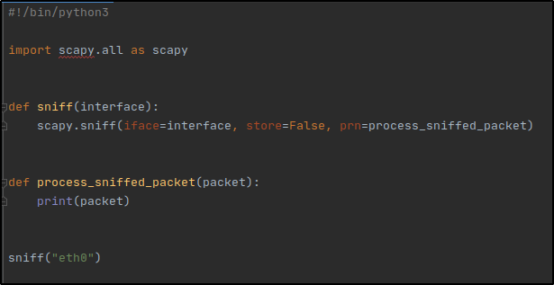

Packet Sniffer.
Alright guys. In the previous post, we built a program that allows us to run an ARP spoofing attack, redirecting the flow of packets in the network and places us in the middle of the connection. Meaning, we get every data sent or recived from our target machine goes through our own computer, allowing us to see all the information they send and recieve, which I think is cool. The only problem with this, we don't know how to read all the information we get flowing through our computer. In other to do this, we'll need a packet sniffer and taht is what we'll be building in this post.
I'm excited, I don't know about you but if we're being honest, i'm sure you can think of a few crazy things you'd want to try after building this tool.
Lets begin!

The defined sniff function, that takes an interface (which is the interface we want to capture data from), the scapy.sniff function, will sniff the data that flows throught the interface thatwe provide as the iface argument. The store=False, is telling the function not to store anything in memory, so it doesn't overload our computer and we call the process_sniffed_packet for every packet sniffed.
Then I went ahead to defined the function, which will take the packet sniffed and print it out, so we know that everything is working.. Finally, in the main program, I called the sniff function and givr it my interface. I used eth0 because it is the interface that's connected to the internet and the network that i'm targeting, so in your case, it could be wlan0 (wireless adapter for a wifi network).
I'm going to test this on my computer becuse, it's much easier and if it works, it'll automatically work when I use it as a man in the middle. When I become the man in the middle thae ARP spoffer will be the program doing the hard work and will make the data flow through the provided interface, so the sniffer just analyzes and reads the data that flows through the interface. I'll be using my browser to generate the traffic, i'm just going to load up google page.

The moment I refredhed the google page, it captured everything. Yes, I know this is all nonsense and has no useful information but you'll see soon how we can dig into these packets and extract useful information from them, such as username and password.
Now, we'll take a look at filtering and continue to build on our program as we go. The easiest way to filter packets is by using the filter argument in the sniff function, this arguments allow us filter packets using the BPF syntax (include lik here), I suggest reading through the different types of syntax that can be used.
Unfortuunately, BFP doesn't allow the filtering of packets sent over HTTP , packets to/from websites. We're going to have to install a third party module to be able to filter HTTP packets
We'll be using pip. PIP is the tool used to install third party modules on Python, the module name we're insatlling is "scapy_http".
Make sure you have pip installed, if you don't, use this command in your terminal "apt install python3-pip". Don't forget the sudo command, if you don't have root privileges.
Here's how t install scapy_http:

Here's the documentation of this module, incase you'd like to go through it. According to the documentation, here's how to import it:

We're going to modify our print function, to only print out http packets.
If our packet has a layer and the layer is a HTTP Request, print the packet. So instaed of our intial print packet staement, that just prints all the packet, this print statement prints only the packet with HTTP Request packet.

Our result isn't great but it's much more readable than the first one. We're going to have to keep working on our program and extract only the useful parts that we want.

Now, lets start filtering the needed information, such as login and passwords.

This would ommit all the other layers (ethernet, IP, etc), it'll only print the raw layer where the load feild is, which is essentially what we want to print. This si just an example, if you want to print a different layer, all you have to do is use the packet name and the layer you want between the square brackrets and the field you want within the layer. Meaning you can adapt this program to any packet you want to capture. Now, i'm going to login to a website, and see if it'll print only the creentials.